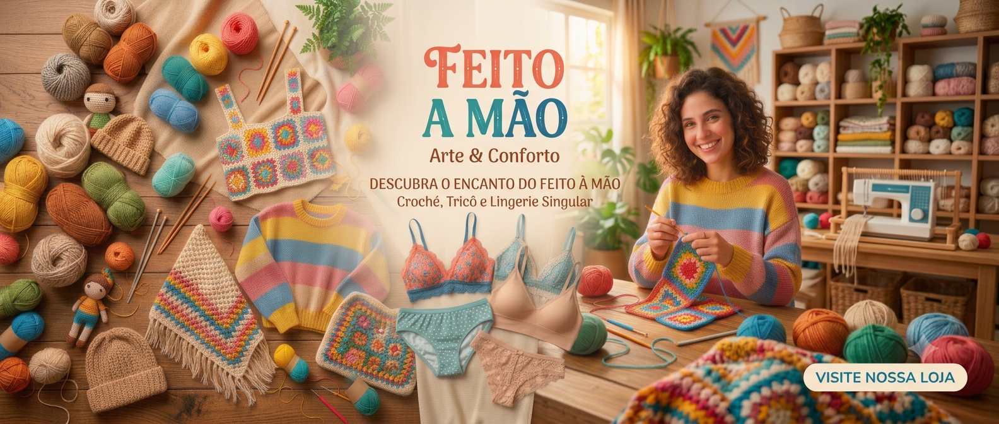

Feito à Mão — descubra o encanto do feito à mão

Cor, afeto e criatividade em cada detalhe
Vista a vida
com mais cor!
Crochê, tricô e lingerie artesanal para quem ama peças cheias de personalidade. Descubra criações feitas à mão para deixar seus dias ainda mais especiais.
Um universo de possibilidades